Изготовление шоколадных косметических средств дома .

Не секрет, что возможность посетить салон или центр омоложения и воспользоваться там шоколадной косметикой часто не представляется возможным в силу разных жизненных обстоятельств. Стоит ли из-за этого унывать? Конечно нет! Вы сами у себя дома сможете не только приготовить необходимые косметические препараты с использованием порошка какао-бобов, но и с успехом применить их для своей пользы и удовольствия. Косметические продукты готовят как из готового темного шоколада, так и из порошка какао. Шоколад обычно растапливают до полужидкого состояния, а какао в порошке при помощи воды, наоборот, доводят до густоты сметаны. Следует помнить, что эффективность какао-порошка и шоколада в плитках примерно одинаковая.
Для изготовления смеси в домашних условиях необходимо купить обычный шоколад в плитках с содержанием какао не менее 50 %. Первым делом следует растопить 50 граммов шоколада на водяной бане или в микроволновой печи. Затем в получившуюся жидкую шоколадную массу добавить ложку растительного масла. Из масел предпочтение лучше отдать оливковому, кунжутному или миндальному. Хороши также масла из расторопши, пихты и плодовых косточек. Для увеличения оздоровительного эффекта вы можете использовать и иные натуральные масла. Образовавшаяся смесь перемешивается и остужается до температуры, наиболее приемлемой для нанесения на кожу лица. Так как это зависит от индивидуальных особенностей человека, то и определять температуру шоколадной маски следует индивидуально, опытным путем. Массу наносят на чистую кожу, избегая областей вокруг глаз и губ. Если шоколад использован не полностью, вы можете нанести остатки его на шею и область декольте. Среднее время воздействия шоколадной маски составляет от 10 до 15 минут, после чего она просто смывается теплой водой.
Маска идеально подходит тем, у кого нормальная кожа лица, хотя рецепт этой маски не имеет ограничений по типу кожи. Если у вас сухая кожа, в массу можно добавить свежие сливки или молоко. Даже при наличии раздражения, покраснения или небольших воспалений шоколад окажет успокаивающее и восстановительное воздействие. Так как маска с использованием темного шоколада обладает легким красящим эффектом, во избежание этого рекомендуется использовать белый шоколад. Обычно шоколадную маску накладывают вечером, хотя оптимальное время для проведения этой процедуры вы, конечно, выбираете самостоятельно.
При приготовлении тонизирующей витаминно-шоколадной маски в растопленный, как было указано выше, шоколад добавляют ягодную, овощную или фруктовую смесь. И хотя использовать фрукты, овощи или ягоды можно любые – это дело вашего предпочтения, но наиболее полезны для вашей кожи будут мякоть огурца, груши, дыни или киви, а также клубника и малина. После тщательного перемешивания образовавшуюся шоколадно-фруктовую (ягодную) массу накладываем на лицо и спустя 10 минут смываем теплой водой. Такая маска подойдет для сухой, нормальной и комбинированной кожи. Если у вас кожа жирная, то рекомендуется в качестве добавки взять клюкву, вишню, яблоко или красную смородину, а в готовую фруктово-шоколадную смесь добавить 1 чайную ложку лимонного сока.
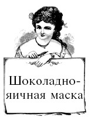
Для борьбы с сухостью кожи лица можно использовать шоколадную маску с добавлением сметаны и яичного желтка. Для приготовления массы для такой маски необходимо взять небольшое количество молочного шоколада и растопить его в водяной бане. В полужидкую шоколадную массу добавляем кислую сметану из расчета одна столовая ложка шоколада на одну столовую ложку сметаны и тщательно все перемешиваем. В образовавшуюся сметанно-шоколадную массу добавляем свежий яичный желток и вновь все перемешиваем. Массу наносим на лицо и после 10–15 минут смываем все теплой водой. Если после нанесения массы на лицо у вас осталось небольшое количество маски, нанесите ее на шею или область декольте.
Как вариант, особенно в борьбе с морщинами лица, следует использовать шоколадную маску с добавлением сливок. На одну столовую ложку сметанообразного шоколада берется столовая ложка жидких сливок, но следует учитывать густоту шоколадной массы, для того чтобы добавление сливок не сделало вашу маску слишком жидкой. После нанесения такая маска питает и увлажняет кожу лица в течение 10–15 минут, а затем смывается теплой водой. Шоколадно-кофейная маска является разновидностью предыдущей, с той разницей, что здесь используется молоко. Для приготовления маски смешивают в равных долях какао-порошок и молотый кофе, а в образовавшуюся смесь мы добавляем цельное молоко до образования однородной кремообразной массы. Способ применения аналогичен способу применения шоколадно-сливочной маски.
Начать использование шоколада в оздоровительных целях вы можете с приема ванночек для ног, позволяющих избавиться от огрубевшей кожи, мозолей и раздражения. Эта процедура не только снимет усталость с ваших ног, но и улучшит общее настроение.
Еще больший оздоровительный эффект вы получите при использовании специальных гидромассажных ванночек и массажеров для ног.
Прежде всего возьмем 30 граммов темного шоколада и растопим его в водяной бане или микроволновой печи. В образовавшуюся сметанообразную массу добавим 4 столовые ложки какао-порошка и разбавим образовавшуюся смесь теплым молоком. Консистенция жидкой сметаны – это то, что нам нужно. Состав для ножной ванночки готов. Если вы любите дополнительные ароматы, то можете добавить половину чайной ложки ванилина или несколько капель эфирного масла, наиболее приятного для вас. Но не забывайте, что и запах самого шоколада успокоит вашу нервную систему и придаст вам необходимые силы. Образовавшуюся шоколадно-молочную массу добавьте в емкость с небольшим количеством горячей воды и подержите в ней ноги в течение 10–15 минут. При остывании возможно добавление небольшого количества горячей воды. После окончания процедуры ополосните ноги, промокните их полотенцем или простыней, а сухую кожу смажьте любым подходящим для вас кремом для ног.
После шоколадных ванночек для ног перейдем к ваннам для всего тела. Вас ждет сплошное удовольствие!
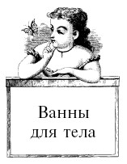
В данном случае используется какао-порошок в чистом виде без каких-либо добавок. Такая ванна оказывает общеоздоровительное воздействие, снимает стресс, делает вас немножечко счастливее. От 100 до 200 граммов какао-порошка необходимо залить одним литром горячей воды (90 °C), тщательно перемешать и, не давая остыть, вылить в ванну с теплой (комфортной для вашего тела) водой. Шоколадную ванну нужно принимать в течение 20 минут, предварительно приняв душ. Можно сделать пилинг (очищение) кожи при помощи обычного скраба. После принятия шоколадной ванны снова примите душ, промокните тело полотенцем или простыней и на сухую кожу нанесите питательный (увлажняющий) крем.
Дополнительно вы можете создать и успокаивающую атмосферу в самом помещении, приглушить свет и включить музыку, способствующую релаксации. Наибольший эффект вы, конечно, получите в гидромассажной ванне.
Для смягчения воздействия шоколада на кожу, особенно светлую, можно использовать в качестве дополнительного ингредиента сухое молоко. Оно не только уменьшит красящий эффект какао, но воздействием молочной кислоты сделает вашу кожу более мягкой, придав ей некоторую бархатистость.
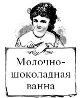
Состав для шоколадно-молочной ванны готовят на водяной бане.
На 100 граммов какао-порошка, вы берете 100 граммов сухого молока и 1 столовую ложку корицы. Смесь заливаете 1 стаканом теплой воды, хорошо размешиваете и доводите на водяной бане до горячего состояния. В готовый состав рекомендуется добавить две столовые ложки масла – предпочтение отдайте облепиховому, пихтовому или оливковому, и готовую смесь выливаете в ванну, наполненную горячей (комфортной для вас) водой.
Определенный тонизирующий эффект придаст 1 столовая ложка лимонной кислоты, добавленная в такую ванну, но использовать ее в обязательном порядке не нужно, этот ингредиент – для любителя. Необходимо учитывать индивидуальную реакцию кожи.
Если у вас слишком сухая кожа и требуется дополнительное ее увлажнение, то соотношения какао-порошка и сухого молока должно быть следующим: на 4 столовые ложки какао берется 400 граммов сухого молока. Образовавшуюся сухую смесь заливаете двумя стаканами теплого молока и тщательно перемешиваете. Образовавшийся состав выливаете в ванну с горячей водой, и дальнейшие действия как при приеме обычной шоколадной ванны.
А теперь поговорим о пилинге, который можно провести дома, самостоятельно. В домашних условиях шоколад хорошо использовать для очищения кожи, ведь вы не только сможете успешно провести эту процедуру, но и помочь вашей коже минералами и витаминами, находящимися в какао. Конечно, для пилинга нужно приготовить специальную смесь, несколько рецептов которой мы рассмотрим далее.
Интересен рецепт сахарно-шоколадного скраба, который можно использовать как для рук, так и для тела. Причем такой скраб обладает хорошим увлажняющим эффектом и идеально подходит для сухой и шелушащейся кожи.
Состав его прост. На 2 части сахара вы берете 2 части глицерина или вазелина, 1 часть какао-порошка и 1 часть меда. Все это хорошо перемешивается и сразу готово к использованию. После нанесения скраба на кожу вы смываете его теплой водой. Ощущения от использования сахарно-шоколадного скраба просто удивительны. Попробуйте – не пожалеете!
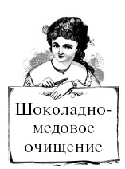
Хорошо зарекомендовал себя следующий состав для шоколадно-медового пилинга. Для его приготовления необходимо взять 100 граммов какао-порошка без добавок, 100 граммов пчелиного меда и 100 граммов коричневого сахара, в которые добавить 3 столовые ложки растительного (оливкового, облепихового или аналогичного) масла и несколько капель эфирного масла корицы или ванили. Полученную массу тщательно перемешать до однородного состояния, и пилинг готов. Наносить его на кожу нужно легкими массирующими движениями, сильно не нажимая. После завершения процедуры смыть остатки массы теплой водой, промокнуть тело полотенцем или простыней.
В качестве дополнительных ингредиентов в шоколадном пилинге можно применитиь молотый кофе и измельченные овсяные хлопья.
Удобны в применении очищающие шоколадные шарики для лица, в состав которых входит масло какао.
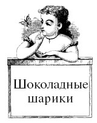
Для их приготовления вам понадобится: 2 столовые ложки масла какао, 1 столовая ложка меда, 1 столовая ложка овсяных хлопьев и 1 столовая ложка молотых грецких орехов. Ингредиенты следует тщательно перемешать до образования однородной массы, а образовавшуюся массу разделить и раскатать на шарики, которые после затвердевания можно использовать в качестве косметического средства.
Ранее мы уже касались темы шоколадного обертывания, проводимого в условиях косметологического центра. Но указанную процедуру вполне возможно проводить и в домашних условиях. Всю эту оздоровительную процедуру разделим на несколько этапов: наложение шоколадной маски, массаж (самомассаж), арома-терапию и послепроцедурный отдых или релаксацию.
Для наложения маски можно использовать уже готовую, приобретенную у изготовителя шоколадной косметики, или изготовленную в домашних условиях. Далее в этой главе мы научимся делать шоколадную косметику в домашних условиях, ну а пока продолжим разговор о домашнем обертывании. Перед применением готовой смеси убедитесь, что шоколад не вызывает у вас аллергию и что вы не страдаете заболеваниями, при которых шоколадная косметика не рекомендуется к применению. В этом вам поможет ваш лечащий врач, а для беременных женщин соответствующий специалист.
Нанесите небольшое количество шоколадной маски на запястье и проверьте, оказывает ли продукция красящий эффект. Обычно этого не происходит, но для людей со светлой и чувствительной кожей это актуально – продукты какао, особенно темный шоколад с содержанием какао-бобов более 50 %, окрашивают кожу, придавая ей легкий бронзовый оттенок.
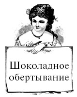
Как и в случае с шоколадной ванной, мы используем какао-порошок без дополнительных примесей. От 100 до 200 граммов этого продукта заливают 0,5 литра горячей воды и, перемешивая, дают возможность образовавшейся шоколадной массе остыть до 40 °C. Для нанесения выбираем пораженные целлюлитом участки тела и обильно покрываем их слоем шоколада толщиной до 3 миллиметров.
Для усиления оздоровительного эффекта можно обернуть места, подвергающиеся лечению, полиэтиленом. Ноги и талию оборачиваем пленкой по направлению снизу вверх в следующем порядке. Начинаем процесс оборачивания с талии и идем по правой ноге вниз, затем вверх и возвращаемся. На талии вновь делаем один виток и переходим на левую ногу вниз, далее вверх и завершаем покрытие пленкой тела в области ягодиц и живота. По желанию вы можете надеть брюки из легкой, но плотной ткани.
Продолжительность воздействия шоколада на кожу ограничим 15 минутами (в первые несколько раз – до 10 минут) и, убрав полиэтилен, смываем шоколадную массу теплой водой и принимаем негорячий душ. Постепенно время проведения процедуры можно увеличить до 30 минут.
Естественно, после этого выпить небольшую чашку горячего шоколада, побаловав им не только тело, но и душу. Для положительного результата рекомендуемся провести по две-три процедуры шоколадного обертывания в неделю, при общем их количестве в 15–20 сеансов.
Перерыв между сеансами составляет 40–60 дней. Общий курс лечения следует согласовать с врачом-косметологом, который поможет разработать комплексную оздоровительную программу с использованием шоколадной косметики.
После того как вы смыли крем-маску, рекомендуется сделать легкий массаж. Вы сами можете методом поглаживания и растирания помассировать доступные участки тела, сочетая это с нанесением антицеллюлитного или иного нужного вам крема или бальзама.
Рекомендуется применять восстановительный шоколадный бальзам для тела, хорошо сочетающийся с шоколадным обертыванием. При возможности попросите своего партнера нанести крем или бальзам, особенно на участки тела, недоступные для вас самих.
В этом случае и массаж будет более эффективным, чем тот, который вы сможете сделать сами.
Завершающим этапом процедуры шоколадного обертывания рекомендуем питье успокаивающего чая из трав. Это может быть простой зеленый чай, а также напиток с добавлением мяты, земляники или мелиссы.
Более сильное воздействие на вашу нервную систему будут иметь травяной чай, в состав которого входят валериана, пустырник или хмель. В домашних условиях вполне по силам составить самостоятельную травяную смесь и употребить ее после шоколадного обертывания. В качестве примера можно посоветовать следующий состав лечебного успокоительного чая.
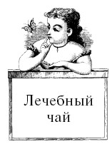
По столовой ложке мяты перечной, зверобоя, душицы, чайную ложку цветков ромашки аптечной и мед по вкусу. Смесь заварить горячей водой (90 °C), настоять 10–15 минут (мед добавить непосредственно перед употреблением) и выпить не спеша. К указанному рецепту травяного чая – при желании можно добавить зеленый чай, измельченные плоды шиповника и немного настойки корня валерианы.
Отдых после шоколадного обертывания является необходимым для вашего организма, получившего мощный заряд энергии теми питательными веществами, какими богаты какао-бобы. Естественно, что в качестве дополнительных ингредиентов в шоколадном обертывании могут применяться и другие, хорошо известные продукты.
При подготовке шоколадно-медового состава мы берем 3 столовые ложки меда, 1 чайную ложку растительного масла и 170–220 граммов какао-порошка. Образовавшаяся масса тщательно растирается и готова к употреблению после добавления в нее эфирного масла мандаринового или апельсинового дерева. После нанесения на кожу участок покрывается пленкой и теплым пледом, а сама процедура длится от 40 до 50 минут. После завершения процедуры тело нужно ополоснуть теплым душем, промокнуть полотенцем или простыней и нанести питательный крем, который вы используете в повседневной жизни. Вместо меда вы можете использовать 2 столовые ложки свежих сливок, в которых присутствует молочная кислота, благоприятно воздействующая на кожу. Процедура проведения шоколадно-сливочного обертывания аналогична шоколадно-медовому.
В домашних условиях вы можете изготовить и шоколадный лосьон для тела, применяемый для увлажнения слишком сухой кожи.
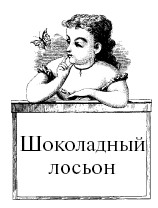
В состав лосьона входят тертое какао-масло (/ стакана), 1 столовая ложка тертого шоколада, 2 столовые ложки миндального или оливкового масла и 1 столовая ложка пчелиного воска. Все указанные ингредиенты тщательно перемешать и поместить в микроволновую печь или водяную баню. Во время плавления шоколада следите за процессом и при необходимости помешивайте смесь. После получения однородной массы перелейте горячий продукт в чистую емкость и остудите. Шоколадный увлажняющий лосьон для тела готов. Похожий лосьон для рук получается, если смешать одну часть какао-порошка или шоколада и одну часть йогурта. В данном случае вы можете взять и сладкий фруктовый йогурт, так как третьей составляющей лосьона является пчелиный мед.
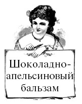
Хорошо увлажняет кожу шоколадно-апельсиновый бальзам, в состав которого входят следующие ингредиенты: 3,5 столовой ложки масла ши, 10 капель апельсинового эфирного масла, 1 чайная ложка миндального масла и 2,5 чайной ложки какао-порошка или шоколада. Масло и шоколад необходимо растопить в микроволновой печи или водяной бане, далее в образовавшуюся массу добавить оставшиеся ингредиенты, тщательно перемешивая образовавшийся продукт. После окончательного остывания шоколадно-апельсиновый бальзам можно спокойно использовать.
Также вы можете самостоятельно изготовить питательный крем для сухой кожи.
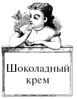
Особых проблем в варке крема нет: нам лишь понадобятся необходимые в таких случаях ингредиенты: шоколад, масло, вода и эмульгатор. В состав шоколадного крема входят столовая ложка кокосового масла, столовая ложка миндального масла и столовая ложка касторового масла, минеральная вода и 4 дольки от плитки темного шоколада. Соединит все эти части эмульгатор – ланолин. Для запаха вы можете использовать любое эфирное масло, подходящее вам. В водяную баню помещают шоколад, масла, столовую ложку ланолина и пять столовых ложек воды. Состав нужно постоянно помешивать, до растворения всех ингредиентов в однородную массу. После этого смесь следует остудить и миксером взбивать до загустения. После окончательного остывания вы добавляете эфирные масла из расчета 2 капли на общий объем крема. Получившийся шоколадный крем идеально подходит для сухой кожи рук, ног и тела, за исключением кожи лица. При нанесении на кожу ног рекомендуется их предварительно распарить – шоколадные ванночки идеально для этого подойдут.
Используя какао-масло и кокосовое масло, можно приготовить превосходный оздоровительный бальзам для губ, способствующий увлажнению этой части лица.
Для приготовления бальзама необходимо смешать 1,5 чайной ложки тертого какао-масла и / чайной ложки кокосового масла.
В образовавшуюся смесь добавьте 1 чайную ложку тертого шоколада. Все это растопите в водяной бане или микроволновой печи до образования однородной массы, при необходимости помешивая. В процессе приготовления смеси вы можете добавить в его состав пару капель эфирного масла, наиболее приятного для вас. Готовый горячий бальзам перелейте в приготовленную чистую емкость и после остывания используйте в свое удовольствие.
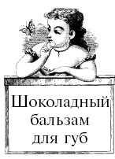
Его очень просто сделать дома. В состав этого продукта, кроме шоколада, входит вазелин. Растопив в микроволновой печи или водяной бане шоколад, то же самое вам нужно проделать и с вазелином. В горячем состоянии оба ингредиента соединяют и тщательно перемешивают до образования однородной массы, которая остывая, будет густеть.
Вылейте бальзам в емкость, удобную для использования, чуть-чуть подождите и пользуйтесь этим натуральным шоколадно-вазелиновым бальзамом, прекрасно защищающим и увлажняющим тонкую кожу губ.
Еще более мощными защитными функциями обладает шоколадно-масляный бальзам, рецепт которого приведен далее. Для его изготовления придется запастись несколькими видами масел.
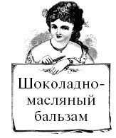
В его состав входят 2 столовые ложки пчелиного воска, 2 столовые ложки масла ши, 2 столовые ложки кокосового или миндального масла и 2–3 столовые ложки какао-порошка. Растопив воск на плите, вы добавляете остальные ингредиенты и, быстро перемешав и не дав массе остынуть, переливаете ее в заранее приготовленную емкость. После охлаждения и затвердевания шоколадно-масляный бальзам для губ готов к использованию.
Конечно, в любой из указанных выше рецептов вы можете добавлять эфирные масла по своему вкусу, но делать это нужно только в остывший или остывающий продукт.
ВНИМАНИЕ! При нагревании многие эфирные масла становятся токсичными, и поэтому их использование происходит на конечной стадии изготовления косметической продукции.
Для оздоровления сухих и ослабленных волос приготовим шоколадный бальзам.
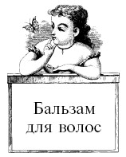
В его составе: пять долек плитки темного шоколада с содержанием какао не ниже 50 %, 150 граммов натурального йогурта без сахара и вкусовых добавок, 2 чайные ложки пчелиного меда. На водяной бане или в микроволновой печи следует растопить шоколад до полужидкого состояния и, добавив в него йогурт и мед, тщательно перемешать до образования однородной массы. Для усиления оздоровительного эффекта вы можете добавить в состав бальзама цитрусовые, банан или киви, предварительно измельчив их. После чего всю эту вкусную массу нанести равномерным слоем на волосы, уделяя особое внимание корням и коже головы. Для увеличения оздоровительного эффекта оберните голову полиэтиленом и полотенцем. Спустя час тщательно промойте волосы водой и шампунем.
При использовании шоколадного бальзама следует помнить о красящем эффекте шоколада, и, если у вас светлые волосы, используйте молочный или белый шоколад, а также уменьшите продолжительность процедуры. При отсутствии шоколада его можно заменить какао-порошком. Пять частей плитки соответствуют двум-трем столовым ложкам порошка.
Для редких и безжизненных волос хорошо подойдет шоколадно-коньячный бальзам.
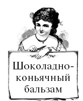
На две столовые ложки растопленного шоколада необходимо взять чайную ложку коньяка или бренди. Хорошо перемешав шоколад с алкоголем, образовавшуюся смесь нанесите на волосы, уделяя особое внимание корням и коже головы.
Помассировав голову, подержите бальзам в течение 15 минут и смойте теплой водой. Вымойте голову шоколадным шампунем. При регулярном нанесении бальзама (два раза в неделю) нормализуется кровообращение в коже головы, корни волос получат дополнительное питание кислородом и микроэлементами. В бальзам вы можете добавить молоко и яичный желток – старые и проверенные ингредиенты. Молоко следует добавлять в горячем виде, но не кипятить, а желток перед добавлением в шоколад нужно растереть в коньяке. В этом варианте бальзам лучше всего наносить еще теплым, а длительность процедуры можно увеличить до 30 минут.
Возможно изготовление в домашних условиях и шоколадного шампуня, но для этого вам необходимо приобрести некоторые специальные ингредиенты: основу для шампуня (мягкие ПАВ), пептиды хлопкового протеина, цетиловый спирт (этал), молочную кислоту и фенок-сиэтанол. Если вы приобрели указанные составляющие, то приступим к приготовлению.
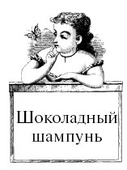
Берем 55 граммов гидролата (цветочной воды) ромашки и помещаем его в водяную баню. Во вторую водяную баню помещаем 5 граммов тертого какао, 2 грамма цетилового спирта и 3 грамма водорастворимого касторового масла.
Цетиловый спирт придаст нашему шампуню необходимую густоту. После нагревания содержимое водяных бань смешиваем и, постоянно перемешивая, остужаем смесь до температуры не ниже 30 °C. Затем добавляем основу для шампуня (мягкие ПАВ) в количестве 30 граммов и вновь тщательно перемешиваем образовавшуюся смесь. Следующим ингредиентом являются пептиды хлопкового протеина, 3 грамма которых мы добавляем в готовый шампунь. Пептиды обладают мягкостью, хорошо увлажняют кожу головы и не вызывают аллергию. В качестве консерванта для нашего моющего средства используем фе-ноксиэтанол (0,8 грамма). Последними составляющими нашего домашнего шоколадного шампуня являются: кетон малины (4 капли) и отдушка «Шоколадный мусс» (0,2 грамма). Фенольное соединение кетона малины способствует стимуляции роста волос, благоприятно влияет на кожу головы, тонизируя и успокаивая ее, снимает лишний жир. Отдушка усиливает шоколадный аромат шампуня, делая его более насыщенным.
Для уменьшения водородного показателя рН, или кислотности нашего продукта, можно добавить молочную кислоту, доведя уровень рН до 5,5, что соответствует здоровой коже человека. Шоколадный шампунь готов.
Но шоколад может служить не только в качестве питательных кремов или оздоровительных бальзамов – его можно использовать и для макияжа. И в этом случае подойдет как плиточный шоколад, так и какао-порошок. Используя натуральные компоненты, вы можете дома изготовить тени для век.
Для этого необходимо приготовить 1 чайную ложку кукурузного крахмала, 1 чайную ложку картофельного крахмала и 2 столовые ложки какао-порошка. Оба крахмала перемешиваем и тщательно растираем. В полученную смесь добавляем какао и вновь перемешиваем до образования однородной массы. Абсолютно натуральная тень для век готова!
Далее предлагаем вам лосьон для загара и краску для волос
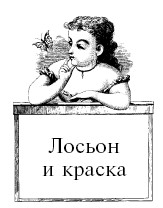
С использованием какао можно сделать свой собственный лосьон для загара, причем интенсивность загара просто регулируется количеством какао-порошка, добавленного в лосьон без запаха. В результате вы получите не просто приятно пахнущую жидкость, но и прекрасное средство для загара. При этом солнце вам не нужно – небольшой красящий эффект, присущий какао, придаст вашей коже мягкий бронзовый оттенок. По этой же причине – проявление красящего эффекта, из какао-порошка получается прекрасная краска для волос. Добавьте какао в свой любимый шампунь, регулируя интенсивность окрашивания путем дозирования количества какао-порошка. Получившуюся смесь перемешайте и нанесите на волосы, а спустя 15–20 минут смойте состав теплой водой.
Мы уже неоднократно убедились, что шоколад – уникальный продукт. Он не только борется за нашу красоту, но прямо или косвенно способствует улучшению самочувствия. Поддержание оптимального веса – одна из основ здорового образа жизни. Шоколад и в этом помогает нам, обладая всеми свойствами диетического продукта.
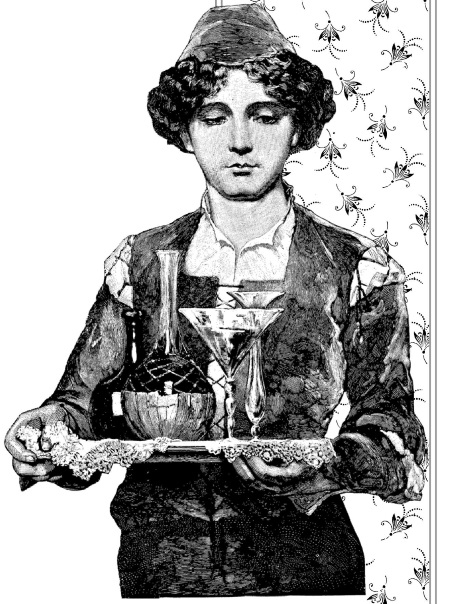